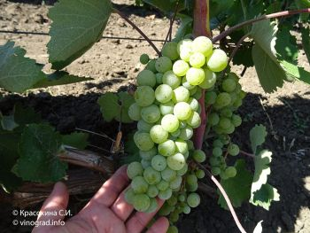

Гордин

Молдавський сорт. Гроно середня, рідше велика, конічна, іноді крилата, середньої щільності або пухка. Ягода
середня, округла або злегка овальна, зеленувато-жовта з темними точками, в період повної зрілості набуває
медово-жовтий відтінок. Шкірочка щільна, м'якоть соковита. Смак приємний. Ягоди слабо прикріплені до плодоніжки.
Сила росту кущів дуже велика, визрівання лози хороше. Відноситься Гордін до універсальних сортам среднепозднего
терміну дозрівання, дозріває в другій декаді - наприкінці вересня. Цукристість 17-19 г / 100 см3, кислотність 7-9 г
/ дм3. Сорт середньо стійкий до грибних хвороб, обробляється в укривной прищепленої культурі.